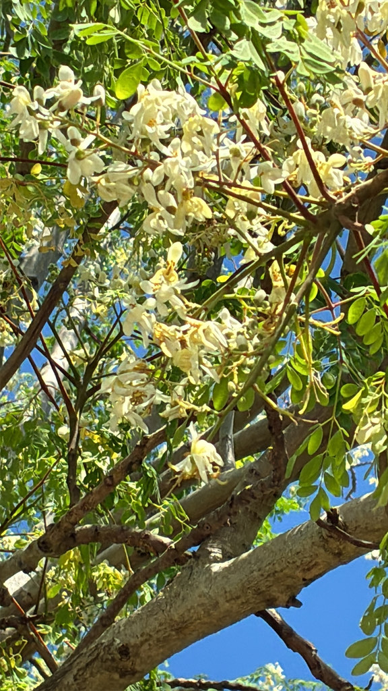

- The leaves contain more vitamin C than oranges, more calcium than milk, more iron than spinach, and more potassium than bananas — gram for gram. This is not marketing; it is documented nutritional analysis used in international food security programs.
- Almost every part of the tree is edible: leaves, pods, seeds, flowers, and roots. The immature pods — called drumsticks — are a staple vegetable in South Asian cooking, used in curries the way green beans are used elsewhere.
- Grows 15 to 20 feet in a single year under good conditions. Can be cut back hard and will resprout from the trunk rapidly.
- The roots smell and taste like horseradish. They are the one part of the tree that carries genuine toxicity concerns and should not be eaten in quantity.
- Local edible landscape gardeners use a technique called coppicing — cutting the trunk down to chest height every winter. This forces the tree to bush out horizontally, keeping the nutritious leaves and pods at arm's reach rather than 30 feet in the air.
- Visitors interested in edible plants often seek this one out and pull a leaf to taste on the spot. The leaves are nutritious — though opinions on flavor vary. Randy tried one and found it quite bitter. The tree is also remarkably easy to propagate: a cutting stuck directly in the ground will root and grow.
Non-native. Native to the foothills of the Himalayas in northern India. Now cultivated throughout the tropics and subtropics of Africa, Asia, Latin America, and the Caribbean — one of the most widely cultivated trees in the world in terms of food and aid programs. Member of Moringaceae.
- Moringa has an unusual position in the plant world: it is simultaneously a standard ornamental tree in warm-climate gardens and one of the most studied food security plants in the world.
- International aid organizations have promoted it in food-insecure communities across sub-Saharan Africa and South Asia because the leaves can be dried and powdered with minimal processing, retain most of their nutritional value, and grow on a tree that tolerates drought, poor soil, and aggressive cutting.
- The nutritional density is real and well-documented. The leaves contain levels of essential vitamins and minerals that exceed many conventional food crops on a dry-weight basis. The pods — the drumsticks — are commonly sold fresh in South Asian grocery stores and used in curries and stews, with a flavor somewhere between green beans and asparagus.
- The tree itself grows fast enough to seem impatient. Left unpruned it becomes leggy; cut back hard it responds within weeks with a flush of new growth. This makes it useful as a managed food plant that stays accessible rather than climbing out of reach.
- The roots and root bark carry the toxicity cautions. They contain spirochin, a potential neuro-paralytic compound, and should not be eaten.
The white flowers attract bees and other pollinators. The seeds, which are sometimes processed into moringa oil, are also used to clarify drinking water — the seed proteins bind to sediment particles, causing them to clump and settle. This water purification application has been documented and used in developing-world contexts.
As a fast-growing canopy tree it provides shade and structure. The pods and leaves are eaten by birds and small mammals in its native range.
White to cream, fragrant, five-petaled, in branching clusters. Attractive to bees. Produced nearly year-round in warm climates.
Long, slender, three-sided, 12 to 18 inches long with constrictions at seed nodes — the drumstick appearance. Deep green when immature. The seeds inside are round with papery wings.
Tripinnate — leaflets of leaflets of leaflets — giving a delicate, feathery texture. Light to medium green. The compound structure is distinctive.
Whitish-gray, soft, with brittle branches that break easily in wind. Not a hardwood.
The feathery tripinnate leaves and the long slender three-sided pods hanging from branches are the definitive combination. The whitish soft trunk and brittle branches are secondary markers.
The leaves, pods, seeds, and flowers are all edible — leaves raw or cooked like spinach, pods in curries, seeds roasted or pressed for oil.
The roots and root bark are the exception: they contain spirochin, a potential neuro-paralytic compound, so don't eat them in quantity. Take the flowers in moderation.
For dogs the leaves and pods aren't listed as toxic, but avoid the roots and bark; check with a vet if a pet eats non-fruit parts.


- © David McSwain (CC-BY-NC), via iNaturalist
- © Zailibeth Perez (CC-BY-NC), via iNaturalist
- © Ruby Meador (CC-BY-NC), via iNaturalist